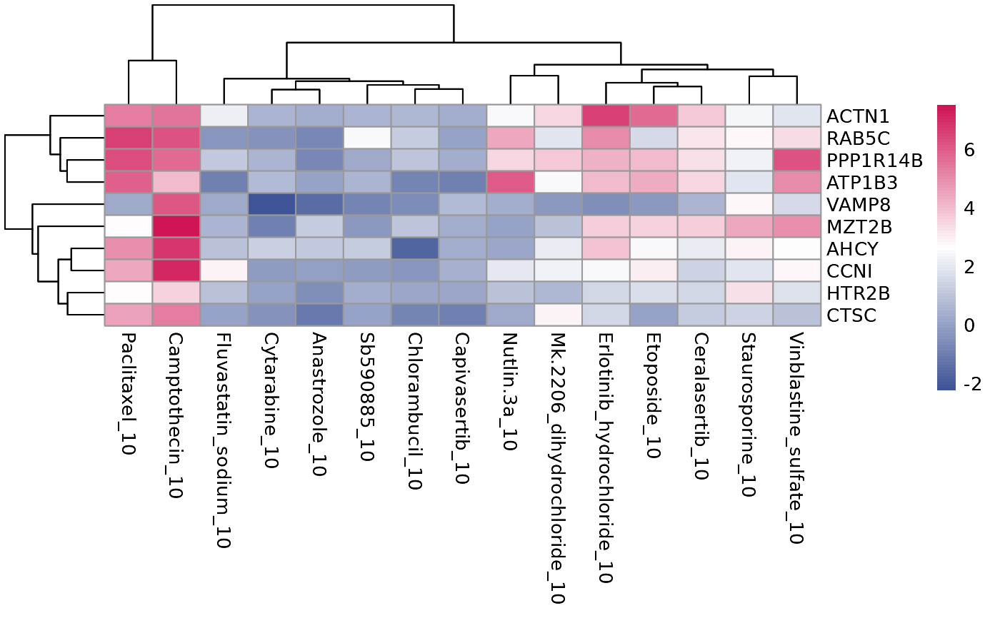

R/plot_multi_de.R
plot_multi_de.RdGenerate heatmap of DE genes from multiple treatments This is the function to generate a heatmap of DE genes from running compute_multi_DE that shared by more than one treatment group. There are a few options available to help you to extract shared DE genes.
plot_multi_de(
data = NULL,
group_by = NULL,
value = NULL,
p_value_cutoff = 0.01,
direction = "both",
n_genes = 10,
control = "DMSO_0",
by = "fc",
gene_list = NULL
)A tidyseurat object merged with metadata. Must contain columns "Well_ID", "Row", "Column".
A column that specifies the treatment group in the input data
To use logCPM, log2FC or metric in the heatmap
Cutoff for adjusted p-value (column p_value_adj), default 0.01
Direction to select up or down regulated genes or in both directions
Top n genes to be extracted from each treatment comparison
The control group to be included in the final heatmap, usually DMSO_0
Extract top n genes by either absolute fold change or by adjusted p-value
External list of genes to plot the heatmap on
a pheatmap object
file_path <- system.file("extdata", "PMMSq033/PMMSq033.rds", package = "macpie")
mac <- readRDS(file_path)
plot_multi_de(mac, group_by = "combined_id", value = "lcpm", p_value_cutoff = 0.01, direction="up", n_genes = 10, control = "DMSO_0", by="fc")
